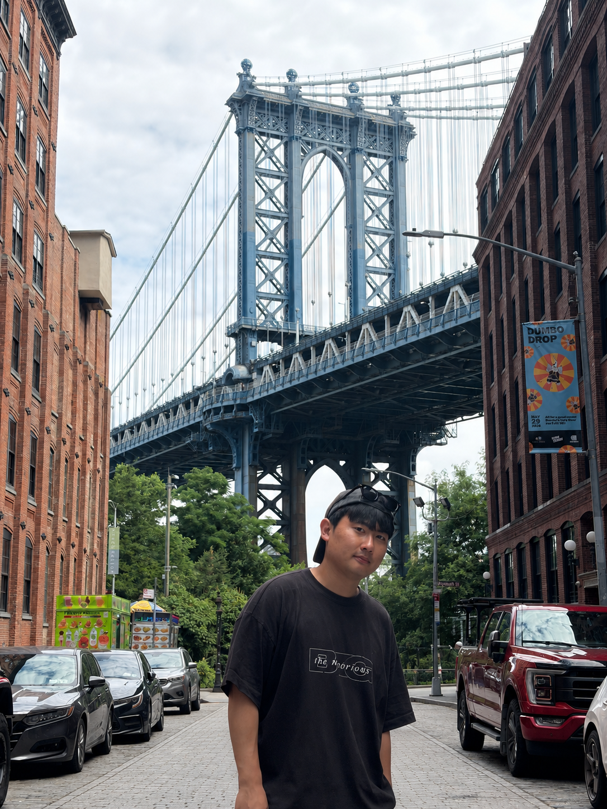

Under Review 2026

Hyeongcheol Park
Ph.D. Student @ Korea University
broiron@korea.ac.kr / Google Scholar / LinkedIn / CV
Welcome to my website! I am a Ph.D. student in the Department of Artificial Intelligence at Korea University, advised by Prof. Sangpil Kim.
My research interests lie in multimodal retrieval-augmented generation, knowledge graphs, continual learning for large language models, and 3D scene understanding.
- Multimodal Retrieval-Augmented Generation
- Knowledge Graphs and Multimodal Reasoning
- LLM Continual Learning and Domain Adaptation
- 3D Scene Editing and Gaussian Splatting
news
2026 Our paper M³KG-RAG has been accepted to CVPR 2026.
2026 Our paper CompMarkGS has been accepted to ICLR 2026.
2025 Our papers EditSplat and IKNE have been accepted to CVPR 2025.
2024 I started my Ph.D. in Artificial Intelligence at Korea University.
publications
CVPR 2026
Under Review 2025
VAT-KG: Knowledge-Intensive Multimodal Knowledge Graph for Retrieval-Augmented Generation
ICLR 2026
CVPR 2025
CVPR 2025
Insightful Instance Features for 3D Instance Segmentation
CVM 2024
Audio-guided Implicit Neural Representation for Local Image Stylization
HCIS 2024
A Survey of Generative Models for Image and Video with Diffusion Model
ICIIT 2023
A Study on the Optimization of the CNNs for Adversarial Attacks
KIPS 2023
Developing the Deep Text-to-Ontology Generator based on Neuro-Symbolic Architecture
patents
2025
Method and Apparatus for Robust Watermarking Through Selective Anchor Augmenting and Pruning of High-Frequency Regions in Rendering Images Based on 3D Gaussian Splatting
2022